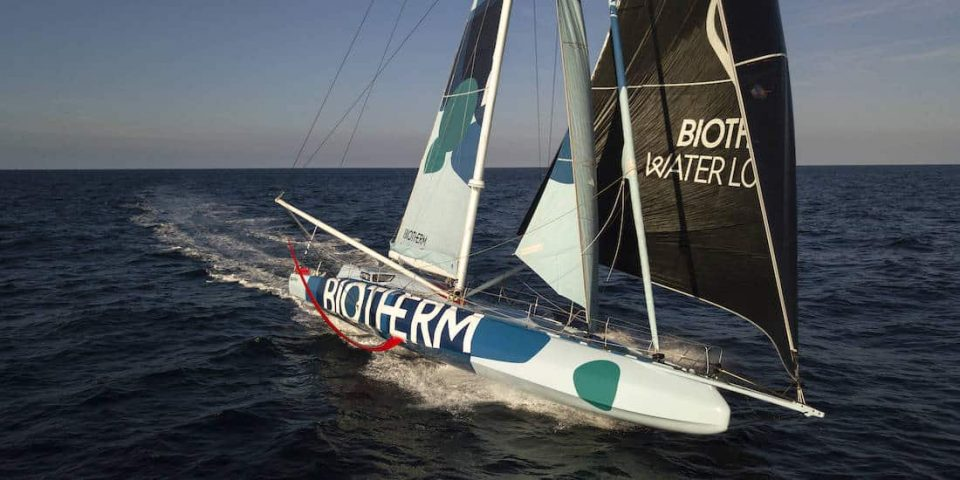
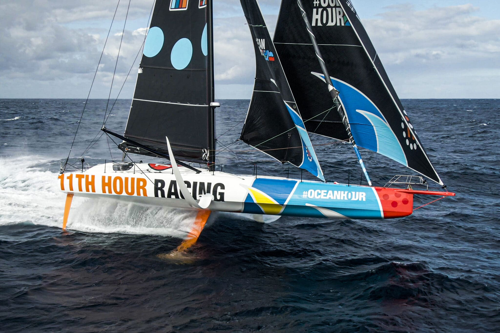
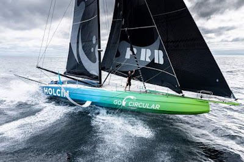
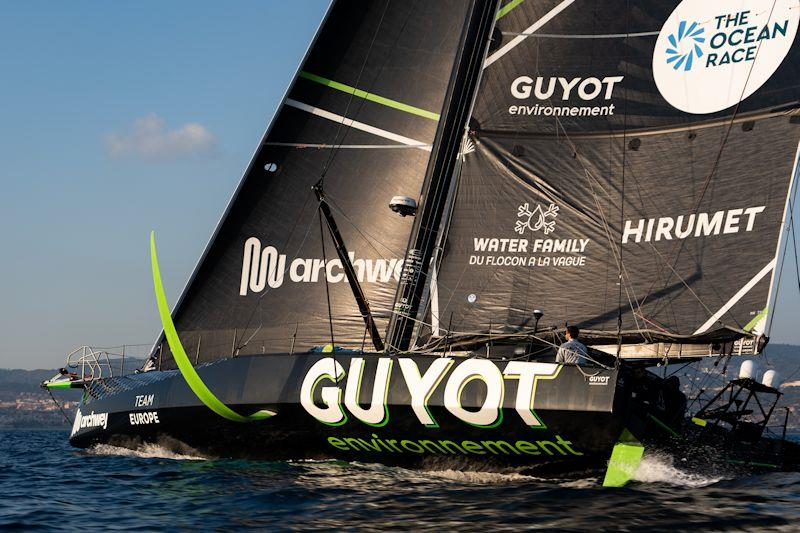
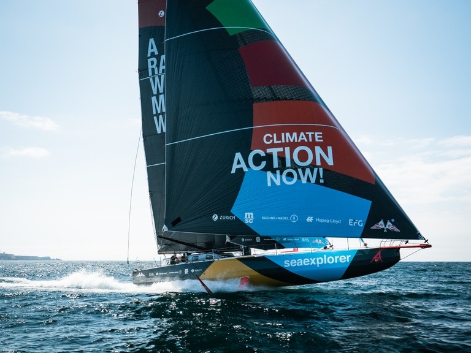

La Ocean Race cuenta con esta categoria de barcos que son los más rapido que pueden ir a vela. En esta categoria tenemos 5 equipos con algunos de los mejores regatistas del mundo
Los 5 equipos que forman parte en la Ocean Race 2023 en IMOCA_CLASS son:
BIOTHERM
Patrón: Paul Meilhat
Nacionalidad del barco: Francia
Tripulantes: Paul Meilhat, Anthony Marchand, Amélie Grassi, Damien Seguin y Anne Beaugé
11th Hour Racing Team
Patrón: Charlie Enright
Nacionalidad del barco: Estados Unidos
Tripulantes: Charlie Enright, Justine Mettraux, Simon Fisher, Jack Boutell y Amory Ross
Team Holcim - PRB
Patrón: Kevin Escoffier
Nacionalidad del barco: Suiza
Tripulantes: Kevin Escoffier, Sam Goodchild, Susann Beucke, Tom Laperche y Georgia Schofield
GUYOT enviroment - Team Europe
Patrón: Robert Stanjek
Nacionalidad del barco: Francia/Alemania
Tripulantes: Robert Stanjek, Phillip Kasuke, Sébastien Simon, Charles Drapeau y Anne-Claire le Berre.
Team Malizia
Patrón: Boris Herrmann
Nacionalidad del barco: Alemania
Tripulantes: Boris Herrmann, Nicolas Lunven, Will Harris, Rosalin Kuiper y Antoine Auriol.